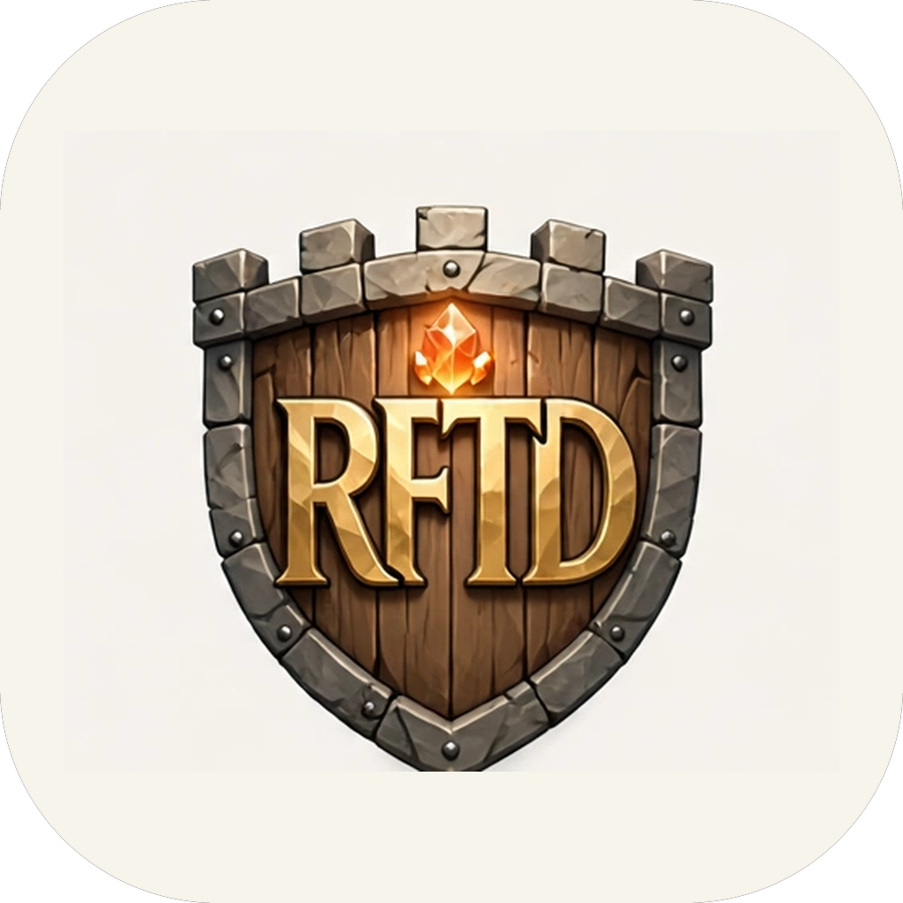
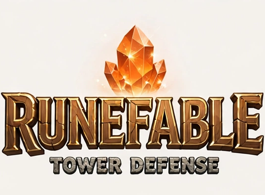

Defend the Forgeheart.
Prototype in development
The Pale Court is marching on the Forgeheart. Raise the towers of Veyra's four races along its roads and hold every town, pass, and shore. A tower defense game set in the world of RuneFable.